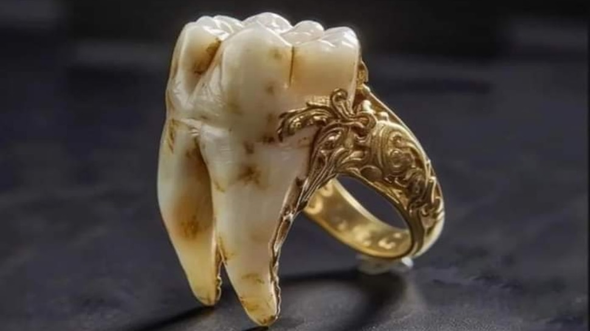

Isaac Newton
Copilărie și Familie
Isaac Newton s-a născut pe 25 decembrie 1642, conform calendarului iulian, în satul Woolsthorpe, din comitatul Lincolnshire, Anglia. Tatăl său, un fermier local, a murit cu trei luni înainte de nașterea lui Isaac, iar mama sa s-a recăsătorit când Isaac avea doar trei ani. Din acest motiv, Newton a fost crescut de bunica maternă, în timp ce mama lui s-a mutat într-o altă localitate. Deși a fost un copil prematur și fragil, Newton a supraviețuit datorită îngrijirii speciale și a devenit un copil extrem de curios și talentat. La vârsta de 12 ani, a fost trimis la The King's School din Grantham, unde a învățat nu doar bazele educației clasice, cum ar fi limba latină și greaca veche, dar și științele și matematicile fundamentale care aveau să îi formeze cariera.
Educație și Formare
Newton a început studiile universitare la Trinity College, Cambridge, în 1661, unde inițial s-a concentrat pe filozofia naturală (precum lucrările lui Descartes și Galileo). Perioada de izolare impusă de epidemia de ciumă din 1665 a fost crucială pentru formarea sa științifică. În această perioadă, Newton a lucrat intens asupra unor subiecte fundamentale, cum ar fi legea gravitației și principiile mișcării. De asemenea, a început să studieze și să dezvolte concepte esențiale în matematică, în special în domeniul calculului diferențial și integral. După revenirea sa la Cambridge în 1667, Newton a fost ales membru al Trinity College, iar în 1669, a preluat catedra de matematică lucasiana, un post prestigios la care avea să rămână până la sfârșitul vieții sale.
Personalitate și Viață Privată
Newton a fost cunoscut pentru natura sa extrem de introvertită și pentru faptul că nu s-a căsătorit niciodată. El a fost un om dedicat complet muncii sale, iar viața sa privată era marcată de o concentrare totală asupra cercetării științifice. Deși avea o personalitate destul de rece și distantă, Newton era adesea implicat în conflicte cu alți savanți ai vremii, inclusiv cu Robert Hooke și Gottfried Wilhelm Leibniz, în special în privința prioritatății descoperirilor în domeniul matematicii. În afacerea științifică, Newton a fost un om extrem de ambițios și uneori gelos pe munca altora. În paralel cu cercetările sale științifice, Newton era și un pasionat alchimic și teologic. A petrecut mult timp studiind alchimia, căutând să înțeleagă „misterele lumii” și să găsească răspunsuri la întrebări spirituale. În 1696, a fost numit warden al Monedei Regale, o funcție importantă în care a avut un rol activ în combaterea falsificării monedei.

Contribuții în Matematică
Newton a revoluționat matematicile prin dezvoltarea calculului diferențial și integral, un domeniu care a fost, de asemenea, abordat în paralel de matematicianul german Gottfried Wilhelm Leibniz. Deși între cei doi a existat un conflict privind prioritatea descoperirii acestui domeniu, lucrarea lui Newton în matematică a fost fundamentată pe raționamentele sale teoretice, care se aplicau unor domenii cum ar fi mișcarea planetelor și dinamica obiectelor. Una dintre marile sale realizări a fost formularea teoremei binomiale generalizate, care extindea teorema binomială pentru exponenți fracționari și negativi, concept care era esențial în analiza matematică. De asemenea, a contribuit la studiul ecuațiilor diferențiale și la dezvoltarea analizei matematice, un domeniu care a avut un impact profund asupra fizicii și ingineriei.
Legea Gravitației Universale
Una dintre cele mai celebre descoperiri ale lui Newton este legea gravitației universale, care a explicat, pentru prima dată, cum și de ce obiectele din univers se atrag reciproc. Legea afirmă că fiecare particulă de materie din univers atrage fiecare altă particulă cu o forță care este direct proporțională cu produsul maselor lor și invers proporțională cu pătratul distanței dintre ele. Această formulare a revoluționat înțelegerea mișcării planetelor, fiind fundamentul legilor de mișcare formulate de Johannes Kepler. Se spune că ideea gravitației i-a venit lui Newton în momentul în care a observat un măr căzând dintr-un pom, ceea ce l-a făcut să se întrebe de ce obiectele cad în jos în loc să rămână suspendate sau să urce. Descoperirile sale în domeniul gravitației au avut un impact uriaș asupra științei și au influențat gândirea științifică timp de secole.
Legile Mișcării
Newton a formulat cele trei legi fundamentale ale mișcării, esențiale pentru mecanica clasică, care stau la baza multor domenii ale fizicii moderne. Prima lege, legea inerției, afirmă că un obiect va rămâne în starea sa de repaus sau va continua să se miște cu viteză constantă dacă nu sunt prezente forțe externe care să-i schimbe starea. A doua lege, legea fundamentală a dinamicii, stabilește că forța aplicată unui obiect este egală cu produsul masei și accelerației acestuia, iar a treia lege, legea acțiunii și reacțiunii, afirmă că pentru fiecare acțiune există o reacțiune egală și opusă. Aceste principii au stat la baza dezvoltării mecanicii și au avut un impact esențial asupra evoluției științei în general.
Optică și Lumină
Newton a adus contribuții semnificative în domeniul opticii. A demonstrat că lumina albă este compusă dintr-un spectru de culori, printr-un experiment celebru cu prisma, în care lumina albă a fost descompusă în culorile spectrului vizibil. În plus, Newton a construit primul telescop reflector, un telescop care folosea oglinzi în loc de lentile, ceea ce a permis obținerea unor imagini mai clare, fără distorsiunile cromatice ale telescopelor refractori. De asemenea, Newton a fost primul care a formulat teoria particulelor de lumină, o idee care va influența dezvoltarea opticii fizice și a teoriei cuantice în secolul XX.
Curiozități
Newton a avut și câteva trăsături mai puțin cunoscute, care adesea captează atenția publicului. Se spune că un dinte de-al său a fost vândut la licitație pentru suma de 3.000 de lire sterline (~17 389 lei). De asemenea, se pare că Newton folosea berea pentru a prepara cerneală pentru manuscrisele sale, un detaliu care adaugă o notă de umanitate vieții sale, deși a fost un om extrem de dedicat cercetării. Newton a fost, de asemenea, numit director al Monedei Regale în 1696, iar în această funcție a avut un rol important în combaterea falsificării monedelor, o activitate care s-a potrivit perfect cu rigorozitatea sa și cu dorința de a controla procesele economice.
Concluzie
Isaac Newton a revoluționat știința, iar contribuțiile sale au pus bazele fizicii moderne, matematicii și astronomiei. Descoperirile sale, inclusiv legea gravitației universale și cele trei legi ale mișcării, au influențat profund înțelegerea noastră despre univers. Moștenirea sa științifică continuă să fie relevantă chiar și astăzi, iar lucrările sale sunt esențiale pentru dezvoltarea tehnologică și științifică a lumii contemporane. Newton a fost președinte al Royal Society între 1703 și 1727 și a lăsat o amprentă de neșters în istoria științei.